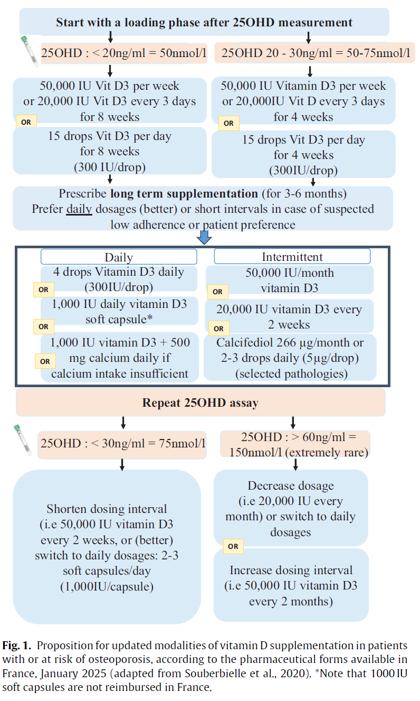

1) Population générale
Supplémentation sans dosage
2) Patients à risque
Supplémentation après dosage de la vitamine D
Personnes concernées :
- Sujets ostéoporotiques ou à risque d'ostéoporose
- Sujets âgés à risque de chute
- Iatrogène :
- Corticoïdes au long cours
- Traitements anti-épileptiques
- Anti-aromatases
- Analogues de la GnRH
- Maladies endocriniennes et dermatologiques : hyperparathyroïdie…
- Malabsorption, maldigestion, cholestase, insuffisance hépatique
- Maladie cœliaque, mucoviscidose, pancréatite chronique, cholangites, chirurgie bariatrique
- Maladie rénale chronique, syndrome néphrotique
- Anorexie mentale
3) Quand doser la vitamine D en rhumatologie ?
Recommandé pour tout sujet à risque d'ostéoporose ou ostéoporotique par le GRIO mais remboursé en France pour :
- Personne âgée avec chutes répétées (Noter sur l’ordonnance : « Évaluation et prise en charge des personnes âgées sujettes aux chutes répétées »)
- Traitement préconisant une mesure de la vitamine D (ex. Biphosphonates)
- Suspicion de rachitisme
- Suspicion d’ostéomalacie (fatigue musculaire, douleurs osseuses)
4) Tableau de conversion
| Unités |
Carence sévère |
Insuffisance |
Concentration optimale en pop générale |
Cible chez patients à risque |
Ne pas supplémenter au delà de |
Seuil toxique |
| ng/mL |
< 10-12 |
10-20 |
20-50 |
30-60 |
60 |
150 |
| nmol/L |
< 30 |
30-50 |
50-125 |
75-150 |
150 |
375 |